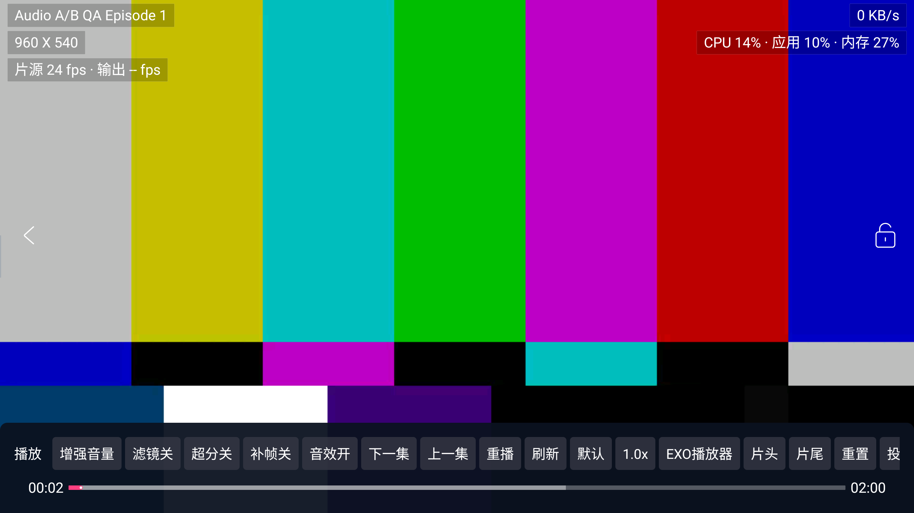
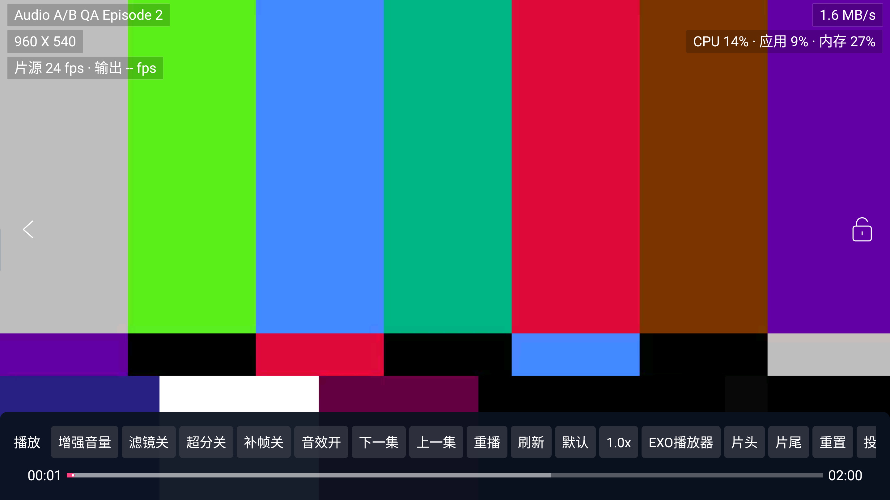

r91 基础上的本地音量改动，未发布。播放栏可即时切换“增强音量／原始声音”；原声 PCM 逐字节旁路，并释放 App 软件音效，保留系统音量、静音和焦点行为。
最终门禁：26 项主机步骤、B01 Release、APK 验签与 ARM64 单包门禁通过；MuMu 设备最终通过 75 项断言。
API 35 模拟器不代替真车 API 32 的 OEM 行为和听感。
实际安装 APK SHA-256：6aaccfe177d15bd2a6af87ab068a18dff08b54eed5214e83d5bc15cc608c61ed
| 确定性 PCM | 输入 | 增强输出 |
|---|---|---|
| 均衡档轻声 | −30 dBFS RMS | −19 dBFS RMS |
| 均衡档响段 | −14 dBFS RMS | −18 dBFS RMS |
| 稳态轻响差 | 16 dB | 1 dB |
| 原声档 PCM16 / Float | 含满刻度与原始浮点位型 | 逐字节一致 |
数值来自合成 PCM；0.8414 上限是处理器的采样峰值，不是过采样真峰值。Lint 仍有既存 1 Fatal、3 Error、1229 Warning，NewApi 为 0。


早期 fixture 权限、初始化和测试等待问题已在最终运行前修正；探索过程保留在会话临时目录，未混入上述通过记录。所有机主安装保留。